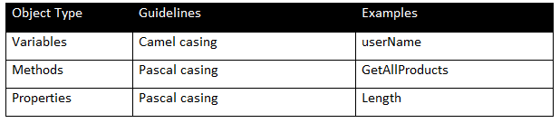

Setup and Recovery Instructions
- On the desktop, double click on the file ‘click-here.bat’. This will open the browser with necessary instructions, question and two command prompt windows, one performs the angular cli installation and the other performs node_modules extraction from zip file.
- You can minimize the command prompts and continue with coding while the extraction happens in the background. Kindly do not close the command prompts as this will stop the extraction.
- In case you close the browser tab inside the VM, you can always execute the file ‘instruction.bat‘ kept on desktop to open it again
- The starter code required for the certification has been loaded into your environment and is present in ‘user_repo‘ directory on the desktop. Do not delete this directory
- Open the user_repo folder present on the desktop and navigate to "CureWell" folder. Inside this folder, you have been provided with "CureWell.sln" file, double click on that file. If you get pop up to select IDE, select Visual Studio 2019
- If you get a sign in pop up window, Click on Sign in and kindly sign in with Infosys credentials and MFA authentication
- After opening the project in Visual Studio 2019, wait until the dependencies get restored. On successful restore, the warnings symbol over dependencies will disappear
-
You have been provided with three projects
- CureWellDataAccessLayer- Data Access Layer
- CureWellWebServices- ASP.NET Core Web API project
- CureWellApp- Angular project
- Proceed with coding only after loading your entire project
- You're all set to code now! Start with the mock certification! Good luck!

Introduction
Angular is the most powerful UI framework which can be used to develop complex, customizable, modern, responsive and user friendly web applications. ASP.NET Core is a framework built on top of .NET Core framework that leverages C# to design web applications with Web APIs. In the environment provided to you, you will be developing presentation tier using Angular and its corresponding API endpoints using ASP.NET Core Web API. If you are not familiar with ASP.NET Core Web API and Angular, we recommend going through the Lex courses ‘Developing Services using ASP.NET Core Web API’ and ‘Angular for .NET Developers’ before taking this certification.
Environment DetailsMicrosoft Visual Studio IDE is preferred for development.
| Tools Involved | Version |
|---|---|
|
|
64-bit for Windows |
|
|
v6.3.0 64-bit for Windows |
|
|
v12.18.3 64-bit for Windows |
General Instructions
- An environment containing necessary software and tools is provided
- Please note that this environment is for a limited time only
- To exit this environment, click on Finish button and close the browser tab
- Your code cannot be retrieved once you exit this environment
Instructions for executing Web API:
- To build the application, right click on the solution and select "Build Solution" option
- Make sure that the ASP .Net Core Web API Project is startup project. In order make it as startup project, right click on the ASP .Net project and select "Set as StartUp Project" option
- Select IIS Express Web Browser as Google Chrome
- After successful build, press ctrl+F5 to run your application
- After implementing the solution, use Postman application to check the API
- Double click on the Postman icon in the desktop. You can close the Sign in window and it will directly open the app. Now you can test your API

Instructions for executing Angular application:
- CureWellApp is available as a part of solution. Switching to folder view is not required.
- You will be notified on the completion of node_modules extraction as shown below
- On completion of extraction, the node_modules will be available inside the angular application folder. All the files should be immediately present inside the node_modules (Ensure that there is no nested node_modules folder structure). Refer the image given below.
- Make Google chrome as default browser in browser settings
- Use Node.js command prompt to run your angular application. Paste the angular application path and provide ng serve -o to launch your project in browser
- Ensure that the Web API services are running in the background


General Execution Instructions:
- In order to test your code against the test-cases, you can click on the Execute button present in the environment at the right side of the screen
- Save all the files before clicking Execute button
- A modal window will show you the number of test cases that have passed and failed for your code
- Only when the node_modules extraction is complete the number of test cases passed in Angular will be included
- In case the output shows - Module1 as Build Failed-Total test cases as 1, Success as 0 and Failed as 1, it means that your code is either structurally or logically incorrect. In such cases, please ensure that you create all the required fields, properties and method signature along with appropriate access specifiers as described in the question paper. If you miss out on creating any field or if you alter the access specifiers or if you create any extra variable, properties or methods your code will not be evaluated
- If few of the test cases are failing, check whether you have implemented the exception handling, data annotations, headers for the methods and ensure your code is logically correct
- Afer viewing the results, if your code throws any reference missing exception or any build errors in visual studio build your solution
- Submit code without any compilation errors
- Save all the files and submit the code
Infosys Certified Angular (MS) Associate - Practice/Mock
Instructions to candidates:
- Read the problem statement, functionality and the other details provided carefully and implement the solution
- The questions and the functionality sequence are not in any specific order. So, the implementation can be done in the order of your convenience
- The coding standards and comments are mandatory wherever applicable
- Follow the class diagram strictly
- Use case sensitive string comparison wherever applicable
-
Do not
- delete the project or its content
- modify the file structure of the project
- modify the code or the signature of the methods under "Do Not Modify" or "Do Not Modify Signature" regions
- Code submitted with structural/compilation/runtime errors will not get evaluated
Common errors which might lead to non-evaluation of code:
- Removal/modification of namespace name
- Improper/partial implementation of properties
- Infinite loops/infinite recursive calls in the code
- Improper constructor prototype or definition
- Any other class diagram violation
NOTE: NOT adhering to the above instructions and guidelines may lead to drastic reduction in your score even if the code is executing without any errors
Cure Well - Hospital Management Web Application
General guidelines on naming conventions:
The ASP.NET coding standards to be followed in the application are as follows:
The Angular coding standards to be followed in the application are as follows:
Problem Statement:
“Cure Well” is a renowned hospital in Sydney. They require an application to plan surgeries based on the specialization and availability of doctors. You have been provided with data access layer created using Entity Framework Core and data is provided in static lists. You are expected to implement the ASP.NET Core Web API and Angular application for the given requirements.
- CureWellDataAccessLayer- Data access layer class library
- CureWellWebServices - ASP.NET Core Web API application
- CureWellApp - Angular project
Data access layer implementation details
The following methods are implemented in the data access layer:
NOTE : DoctorList, SurgeryList are static properties. They have been initialized with appropriate values inside the static constructor.
The following methods of the data access layer uses the above static lists.
| S.No. | Method Name | Description | Return Values |
|---|---|---|---|
| 1 | UpdateSurgeryDetails | Updates the surgery details in the static list SurgeryList | true in case of successful execution. false in case of any exception(s) |
| 2 | GetAllDoctors | Retrieves all the doctor details | List<Doctor> in case of success. null in case of any exception(s) |
| 3 | GetAllSurgeryDetails | Retrieves all the surgery details | List<Surgery>in case of success. null in case of any exception(s) |
Service layer implementation details
Note: Implement structured exception handling in all the methods
Create the Model classes (Web API Application) as per the following class diagram
Data annotations should be implemented as given below:
- DoctorId and DoctorSpecialization are mandatory fields in Doctor class
- SurgeryId, DoctorId and SurgeryDate are mandatory fields in Surgery class
Controller implementation:
| Action Name | Description | HTTP Method Type |
|---|---|---|
| FetchAllDoctors |
|
|
| FetchAllSurgeryDetails |
|
|
| UpdateSurgeryDetails |
|
Provide appropriate HTTP verb for each action in the controller.
Presentation layer implementation details
Note:
- Implement exception handling in all the service methods
Implementation of CureWellService
The following methods in ‘curewell.service.ts’ need to be implemented
| Action Name | Description |
|---|---|
| getDoctors |
|
| getAllSurgeriesDetails |
|
| editSurgery |
|
| errorHandler |
|
Component implementation of view-surgery-details
The following methods in ‘view-surgery-details.component.ts’ need to be implemented
| Method Name | Description |
|---|---|
| ngOnInit |
|
| getSurgeryDetails |
|
| editSurgery |
|
Component implementation of view-doctor
The following methods in ‘view-doctor.component.ts’ need to be implemented
| Method Name | Description |
|---|---|
| ngOnInit |
|
| getDoctor |
|
Component Implementation of update-surgery
The following methods in ‘update-surgery.component.ts’ need to be implemented
| Method Name | Description |
|---|---|
| ngOnInit |
|
| editSurgery |
|
Implementation of view-surgery-details.component.html
Each surgery detail should have Edit Surgery button which will allow the user to edit the surgery details.
On click of the Edit Surgery button, the editSurgery() method of the ViewSurgeryDetailsComponent must be invoked.
The Surgery Date field must display only the date part as shown above.
Implementation of view-doctor.component.html
Implementation of update-surgery.component.html
The Surgery Id must be read-only field. All other fields are required fields.
The error messages must appear when the text boxes are either visited or modified.